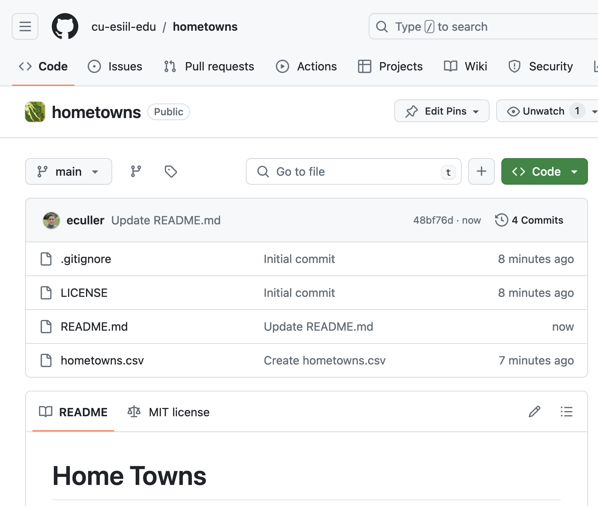
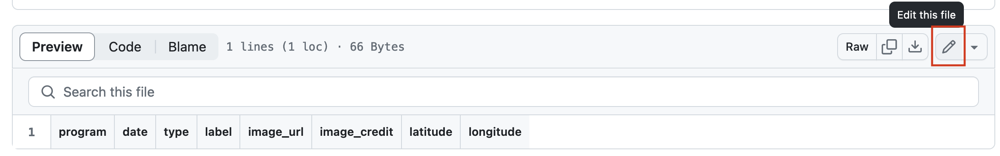

Practice Forking a GitHub Repository and Submitting Pull Requests
A pull request allows anyone to suggest changes to a repository on GitHub that can be easily reviewed by others. Learn how to submit pull requests on GitHub.com to suggest changes to a GitHub repository.
- Distinguish between a fork and a branch.
- Explain the relationship between a forked repository (head) and the original repository (base).
- Submit a pull request from a fork to suggest changes in someone else’s repository
For this assignment, you will add a row to a .csv file with information about your hometown to someone else’s repository using a fork to make your changes. You can practice on the Home Towns repository belonging to GitHub user cu-esiil-edu.
Step 1: Fork the GitHub repo
To begin, fork the ESIIL Education Hometowns GitHub repository Remember that this step only needs to be done once. When you create this fork, you then have full ownership of the fork in your user account. Full ownership means that you can make direct changes to the fork without submitting a Pull Request.
Step 2: Add a row to hometowns.csv
Click on the
hometowns.csvfile.
Click on the hometowns.csvfile.Then, click on the edit button in the upper right. If you haven’t forked the repository yet, you will be asked to at this point.

Click the edit button Add at least one new row to the
hometowns.csvfile for your hometown – that could be where you live now, somewhere you used to live, or another important location for you. You will add the following information to the file, separated by commas:program you are participating in. The options include:
- EDA Certificate
- ESIIL Stars
- Short Course
- Summit
- Hackathon
date: today’s date in YYYY-MM-DD format (for example, January 5, 2024 would be 2024-01-05)
type: the type of entry this is. The options include:
- Where I live now
- Place I’ve lived
- Place I love
label: a few sentences about your place
image_url: the URL to an image you want to display on the hometowns map
image_credit: how you want to credit your image
latitude: the latitude of your place
longitude: the longitude of your place
The file will look something like this once you add your information:
program,date,type,label,image_url,image_credit,latitude,longitude
Short Course,2024-04-07,Where I live now,Home of ESIIL at the University of Colorado,https://upload.wikimedia.org/wikipedia/commons/thumb/b/b9/Flatirons_Winter_Sunrise.jpg/1024px-Flatirons_Winter_Sunrise.jpg,Taken by Jesse Varner | https://commons.wikimedia.org/wiki/File:Flatirons_Winter_Sunrise.jpg,40.016870,-105.279620- Click
Commit - Write a message so you can go back to this point if you want to.
- Confirm by selecting
Commit
Step 3: Submit a Pull Request
Now that you have made some changes to your fork, submit a pull request from your fork to the original repository:
Select the
Pull Requeststab.You should see a banner saying that you are ahead of the base repository. Select the link in the banner to create a PR with your changes.
Include the following in your pull request:
- There are a lot of similar PRs in this repository. In the message, include your username and the place you are submitting so the owner can tell the PRs apart easily.
- In the description, notify the owner of the repository (your instructor) that you have addressed the issue using
@github-username. - Reference the issue number using
Fixes #issue-number(e.g. the issue number is above in the title of this issue). If you are working independently, you may not have an issue with your name on it! Just submit the PR without mentioning an issue.
Confirm by selecting
Create Pull Request.
Be sure to check that the changes you are submitted look correct in the Pull Request before you consider your work, done!